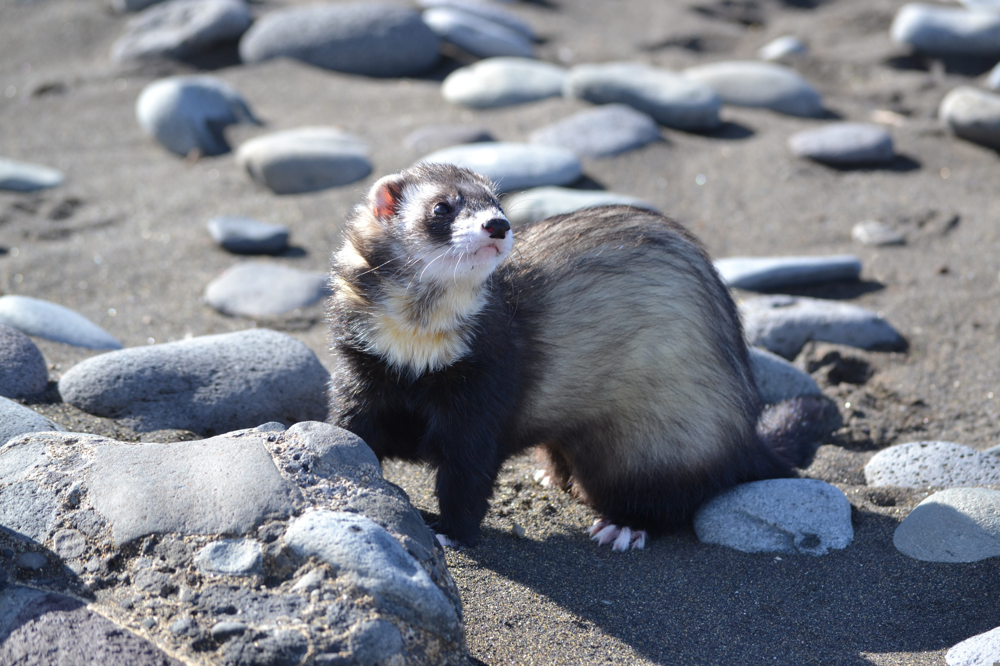
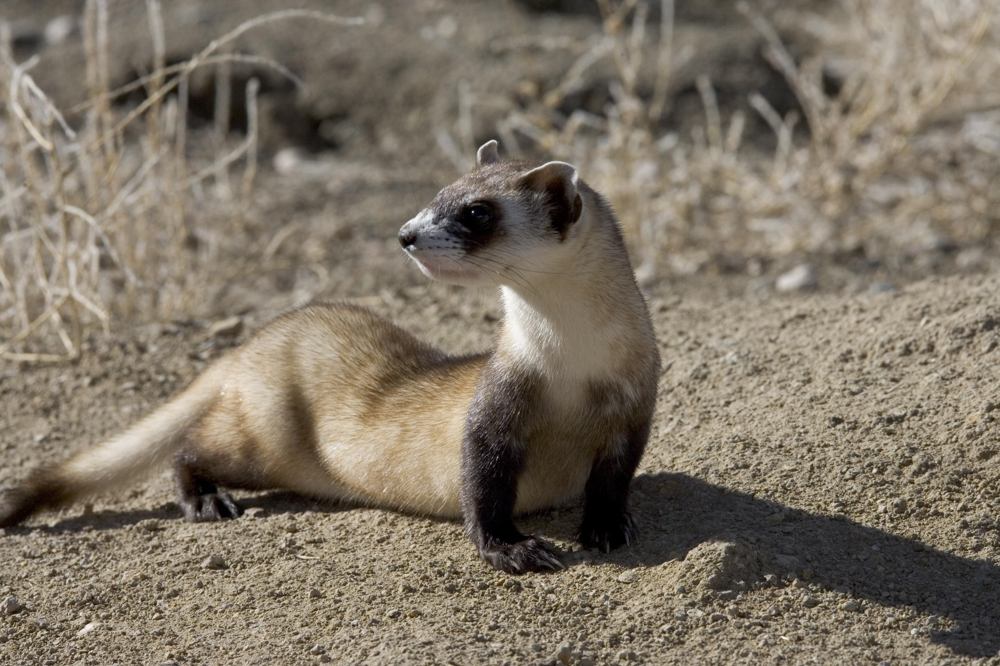

OUR MISSION
SINCE 1988
Black-footed ferrets are one of the most endangered mammals in North America and are the only ferret species native to the continent. By selling our elegant fragrances, we help preserve this elegant and beautiful species.

Black-footed ferrets are one of the most endangered mammals in North America and are the only ferret species native to the continent. By selling our elegant fragrances, we help preserve this elegant and beautiful species.

All purchases of Ferressence products are directly transferred to our Wildlife Black-footed Ferret Reserve.
We actively restore habitats, manage black-footed ferret populations, and conduct scientific research to ensure the survival of this particularly endangered species.

Our premium ingredients are sourced globally, such as lavender from France and high-quality producers emphasizing traceable and sustainable materials.
We use over 1,000 natural and synthetic ingredients. The process involves extracting aromatic oils via steam distillation or solvent extraction.
Learn more about the black-footed ferret’s plight